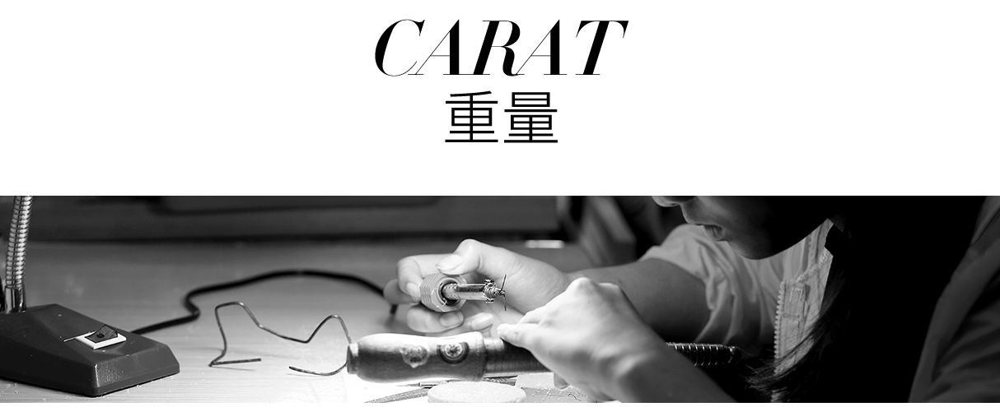
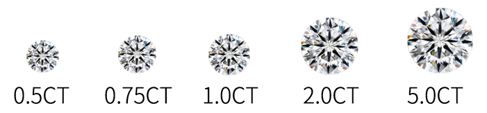
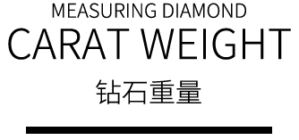

钻石和其他宝石按公制克拉计重：一克拉等于 0.2 克左右，相当于回形针的重量。 （不要将克拉与 K (Karat) 混淆，比如“18K 金”是指黄金纯度）。


一克拉可分为 100 分。 例如，一个 50 分的钻石重 0.50 克拉。 不过，即使两颗钻石的重量相同，其价值也可能有很大差异。因为钻石的价值还取决于 4C 标准中的其他标准：净度、颜色和切工。 大部分镶嵌在精致珠宝饰品上的钻石重量都低于一克拉。
即使零点几克拉也会让成本产生相当大的差异，所以，准确的钻石重量至关重要。在钻石业，重量往往测量到千之一克拉，并计到百分之一克拉。但对1克拉以上的钻石，用克拉数和百分数来表述。 （比如，1.08 克拉的宝石 将被描述为“一点零八克拉”，或“一点零八”。）
克拉重量记重系统的起源？
”克拉“是钻石和其他宝石的标准重量单位，因长角豆而得名。早期的宝石交易者用重量统一的小颗豆角种子作为天平的砝码来使用。 现代公制克拉等于0.2克，于1913年被美国采用，随后其他国家也相继开始使用。如今，克拉重量已成为全球通用的单位。
重量对钻石价格的影响
重量对钻石影响简单概括起来就是越大越值钱，而且随着重量的上升，钻石的价格也在呈几何式的增长。